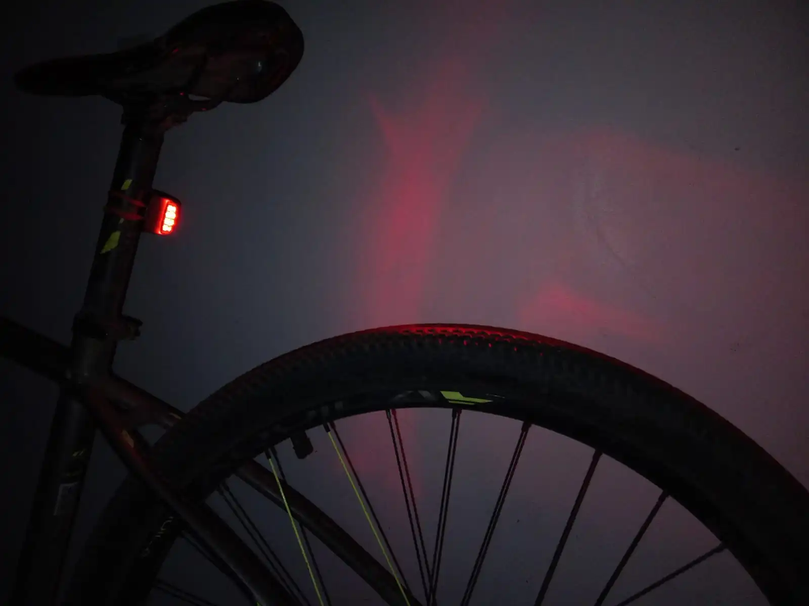

Objetivo General
Generar mayor seguridad vial para las personas que usan este tipo de transporte, con iluminación delantera para
mayor campo de visión al ciclista en lugares oscuros o de noche, e iluminación trasera para que el ciclista sea más visible
para los vehículos de mayor tamaño por medio de luces LED, además estas luces son de uso obligatorio para un ciclista.
Estos LEDS
se van a encender por medio de la energía cinética que produce el ciclista al pedalear que luego se almacenara
en una batería, esta energía luego estará disponible en el momento que el usuario tenga que hacer uso de esta y no produzca más energía.
